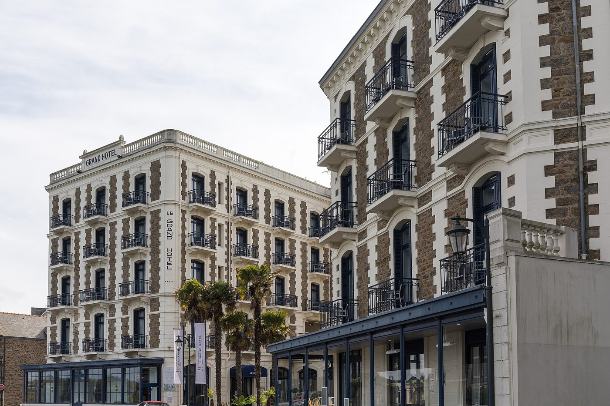
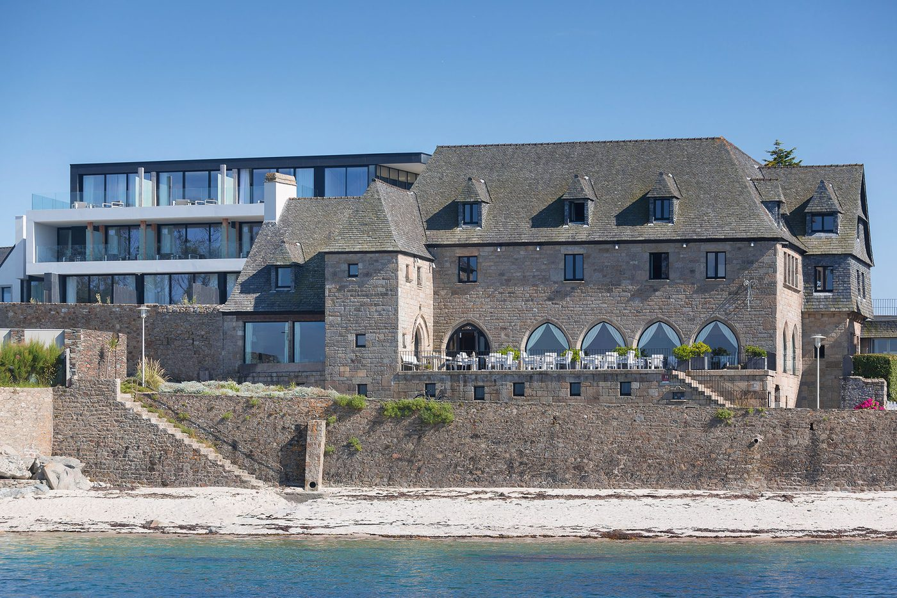
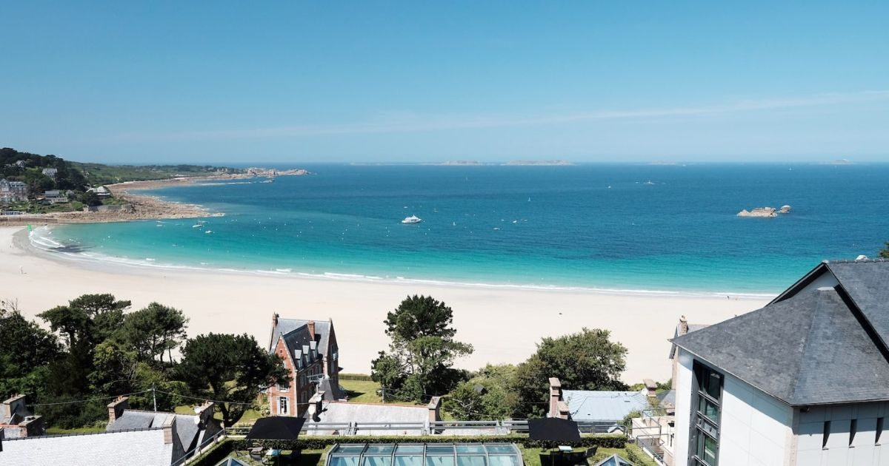
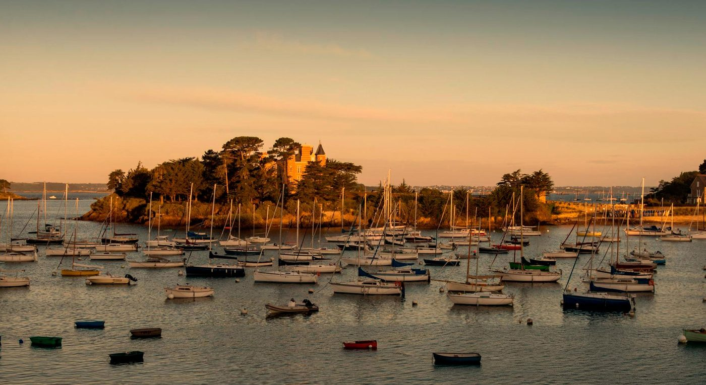

Hôtels de charme en Bretagne : 10 maisons d'exception
Une villa néogothique posée sur la baie de Saint-Malo, un manoir médiéval face à l'île de Batz,
une presqu'île battue par le vent du Morbihan. Dix maisons de caractère, notées sur 10,
avec le défaut de chacune.
Par Lucas Lecoq, rédacteur en chef✺Publié le 27 juillet 2026✺17 min de lecture
Le Castelbrac à Dinard, ancienne villa Bric-à-Brac : premier du classement avec 9,2/10. Photo Pymouss, CC BY-SA 4.0.
TL;DR : l'essentielLe podium du charme breton
Castelbrac, Dinard, 9,2/10 :
une villa de granit du XIXe siècle au-dessus de la baie, et Le Pourquoi Pas,
étoilé au Michelin depuis 2019.
Le Grand Hôtel Dinard Barrière, 8,9/10 :
le grand hôtel Belle Époque de la Côte d'Émeraude, avec le premier spa Shiseido de Bretagne.
Domaine de Rochevilaine, Billiers, 8,7/10 :
une pointe rocheuse du Morbihan, et le meilleur indice breton du classement.
Charme n'est pas luxe. Ce classement ne récompense ni le
nombre d'étoiles ni la surface des suites, mais la singularité d'une maison : son
architecture, son ancrage, ce qu'elle raconte. C'est pourquoi un 4 étoiles y devance
régulièrement un 5 étoiles.
Ce que nous appelons charme
Une maison de charme se reconnaît à ce qu'elle ne peut pas être reproduite ailleurs.
Le Castelbrac tient à sa position sur le rocher, le Manoir de Lan Kérellec à son plafond
en coque de bateau renversée, l'Hôtel de la Plage au fait qu'il n'y a rien autour. Ces
établissements ont en commun une chose que l'hôtellerie standardisée ne sait pas fabriquer :
ils appartiennent à leur lieu.
La Bretagne s'y prête mieux que la plupart des régions françaises, parce que son
patrimoine balnéaire est ancien. Dinard, Perros-Guirec et Roscoff ont accueilli les premiers
baigneurs britanniques dès les années 1850, et les villas de cette époque, souvent classées,
sont devenues des hôtels sans perdre leur silhouette. C'est ce stock architectural qui fait
la différence.
Le tableau : 10 maisons, scores et tarifs
Rang
Maison
Ville
Cat.
Score LMHS
Indice breton
Nuit dès
01
Castelbrac
Dinard
5★ R&C
9,2/10
4,8/5
280 €
02
Le Grand Hôtel Dinard Barrière
Dinard
5★
8,9/10
4,5/5
320 €
03
Domaine de Rochevilaine
Billiers
4★ R&C
8,7/10
4,9/5
327 €
04
Le Brittany
Roscoff
4★ R&C
8,5/10
4,6/5
206 €
05
L'Agapa
Perros-Guirec
5★
8,4/10
4,7/5
190 €
06
Manoir de Lan Kérellec
Trébeurden
4★ R&C
8,3/10
4,5/5
199 €
07
Castel Clara
Belle-Île-en-Mer
4★ R&C
8,2/10
4,8/5
240 €
08
Le Nessay
Saint-Briac
4★ SLH
8,0/10
4,3/5
220 €
09
Hôtel de la Plage
Sainte-Anne-la-Palud
4★ R&C
7,9/10
4,6/5
180 €
10
Les Bassans
Perros-Guirec
Boutique
7,8/10
4,7/5
250 €
Lecture des tarifs : prix d'appel pour une chambre double en
basse saison, relevé en juillet 2026. Le tarif du Castel Clara reprend celui publié dans notre
palmarès des thalassos bretonnes. Les autres sont des
ordres de grandeur constatés, à confirmer lors de nos prochaines visites. En juillet et en août,
comptez 40 à 60 % de plus, et jusqu'au double pour les chambres avec vue sur mer.
Les 10 maisons, du meilleur au dernier
01
Castelbrac 9,2/10
Dinard, Ille-et-Vilaine, 17 avenue George V, sur le rocher de la promenade du Clair de Lune.
La maison s'appelait la villa Bric-à-Brac, bâtie en 1866 pour un
naturaliste qui y installa le premier laboratoire de biologie marine de France. C'est de ce
nom qu'est venu Castelbrac. Le bâtiment n'a rien d'une villa balnéaire blanche : c'est un
volume de granit brut à couronnement crénelé, accroché au rocher, dont les
fenêtres tombent à pic sur les mouillages de la baie de Saint-Malo.
La table :Le Pourquoi Pas, du nom du navire du
commandant Charcot, tient une étoile Michelin depuis 2019, reconduite
chaque année depuis. Le chef Julien Hennote, natif de Dinan, travaille la
pêche côtière durable : ormeaux et coquilles Saint-Jacques de plongée, algues.
Le reste : piscine intérieure chauffée, spa Phytocéane, accès direct à
l'eau, et un yacht baptisé Fou de Bassan pour les sorties en baie.
Le bémol LMHS : c'est l'une des maisons les plus demandées de Bretagne,
pour un nombre de chambres réduit. En haute saison, il faut réserver plusieurs mois à
l'avance et accepter des tarifs qui décollent franchement. La promenade du Clair de Lune,
en contrebas, est très fréquentée l'été.
Ille-et-Vilaine · Villa Bric-à-Brac, 1866 · Relais & Châteaux · Le Pourquoi Pas, 1 étoile Michelin · Chef Julien Hennote · Spa Phytocéane · Indice breton 4,8/5 · Nuit dès 280 €
02

Le Grand Hôtel Dinard Barrière 8,9/10
Dinard, Ille-et-Vilaine, avenue George V, face à la plage de l'Écluse.
Dinard doit son existence de station aux Britanniques, et le Grand Hôtel en est le
monument. La façade alterne pierre claire et moellons de granit, avec des
balcons de ferronnerie sur cinq niveaux : c'est l'architecture balnéaire de la fin du
XIXe siècle dans sa version la plus assumée. À l'intérieur, l'échelle est celle
d'un grand hôtel, pas d'une maison d'hôtes.
La nouveauté : l'ouverture d'un spa Shiseido, le
premier de Bretagne, qui importe les rituels japonais dans un décor Belle Époque. Le
contraste fonctionne mieux qu'on ne l'imagine.
Le bémol LMHS : avec plus de quatre-vingts chambres, c'est le moins
intime du classement, et l'ambiance de grand hôtel avec casino ne conviendra pas à qui
cherche une maison. Le tarif d'appel est aussi le plus élevé des dix.
Ille-et-Vilaine · Architecture balnéaire XIXe · Groupe Barrière · Spa Shiseido, premier de Bretagne · Casino et golf · Indice breton 4,5/5 · Nuit dès 320 €
03
Domaine de Rochevilaine 8,7/10
Billiers, Morbihan, pointe de Pen Lan, à l'embouchure de la Vilaine.
Un hameau de bâtisses de granit posé sur une pointe rocheuse, entouré d'eau sur trois
côtés. C'est la seule adresse du classement où l'on entend la mer depuis toutes les
chambres, et cela lui vaut le meilleur indice breton, 4,9/5. Les
constructions ont été assemblées à partir d'éléments de manoirs bretons démontés, ce qui
donne un ensemble faussement ancien mais authentiquement local.
La table :Maxime Nouail, également pêcheur, a repris
les cuisines avec Cécile Nouail à la tête de la maison. Le restaurant a perdu son étoile
Michelin en 2021 et travaille à la reconquérir ; le domaine a en revanche décroché une
Clef Michelin en 2025, la distinction hôtelière du guide.
Le bémol LMHS : l'isolement est le produit, mais il se paie. Il n'y a
rien à distance de marche, la route d'accès est étroite, et par gros temps la pointe est
franchement inhospitalière. L'absence d'étoile pèse aussi sur un tarif d'appel qui reste
celui d'une grande maison.
Morbihan · Pointe de Pen Lan · Relais & Châteaux · Clef Michelin 2025 · Chef Maxime Nouail · Spa marin · Indice breton 4,9/5 · Nuit dès 327 €
04

Le Brittany 8,5/10
Roscoff, Finistère, boulevard Sainte-Barbe, face à l'île de Batz.
Le manoir a été démonté pierre par pierre dans la campagne léonarde puis remonté à
Roscoff face à la mer, ce qui explique son allure de bâtisse ancienne à un emplacement
qu'aucun seigneur n'aurait choisi. La vue porte sur le chenal et sur l'île de Batz, à
quinze minutes de vedette.
La table :Nori, une étoile au Guide Michelin 2026,
anciennement Le Yachtman. Le chef Loïc Le Bail, passé par Pierre Gagnaire
et Guy Savoy, y pratique une cuisine de la mer traversée d'influences japonaises, son
épouse et son second étant japonais. C'est la fusion la plus convaincante du littoral breton.
Le spa : Thalion, laboratoire breton, avec piscine intérieure chauffée,
sauna, hammam et bain froid.
Le bémol LMHS : Roscoff est un port de ferries avant d'être une station
balnéaire, et le boulevard Sainte-Barbe n'a pas le charme de Dinard. L'accès depuis Paris
demande une voiture depuis Morlaix.
Finistère · Manoir remonté face à l'île de Batz · Relais & Châteaux · Nori, 1 étoile Michelin · Chef Loïc Le Bail · Spa Thalion · Indice breton 4,6/5 · Nuit dès 206 €
05

L'Agapa 8,4/10
Perros-Guirec, Côtes-d'Armor, au-dessus de la plage de Trestraou.
C'est le contrepoint contemporain du classement. L'Agapa assume une architecture
moderne, verre et lignes droites, là où les autres jouent la pierre et l'ardoise. Le pari
tient grâce à la vue : face à l'établissement, l'archipel des Sept-Îles et
sa réserve ornithologique, la plus importante colonie de fous de Bassan de France.
Le spa : CODAGE, rénové en 2023, avec des protocoles composés à la
demande plutôt que catalogués. La plage de Trestraou est accessible à pied.
Le bémol LMHS : le restaurant reste le maillon faible d'une maison qui
vise le haut de gamme, et l'architecture contemporaine, si elle a ses partisans, dénote
franchement sur une côte où le granit rose fait la loi. Trestraou est bondée en août.
Côtes-d'Armor · Face aux Sept-Îles · Architecture contemporaine · Spa CODAGE, rénové 2023 · Accès plage de Trestraou · Indice breton 4,7/5 · Nuit dès 190 €
06
Manoir de Lan Kérellec 8,3/10
Trébeurden, Côtes-d'Armor, sur les hauteurs, face à l'île Milliau.
Le manoir possède le détail architectural le plus mémorable de ce classement : la salle
de restaurant est couverte d'une charpente en coque de bateau renversée,
construite par des charpentiers de marine. On dîne littéralement sous un navire, face aux
récifs de granit rose qui émergent à marée basse.
La maison, de taille modeste, cultive une discrétion qui tranche avec les grandes
adresses de la côte. Cuisine de saison, service familial, silence.
Le bémol LMHS : ni spa ni piscine, ce qui devient rare à ce niveau de
prix en Bretagne. La descente vers la mer se fait par un sentier raide, peu commode pour
qui a des difficultés à marcher.
Côtes-d'Armor · Charpente en coque de bateau · Relais & Châteaux · Face à l'île Milliau · Ni spa ni piscine · Indice breton 4,5/5 · Nuit dès 199 €
07
Castel Clara 8,2/10
Belle-Île-en-Mer, Morbihan, port de Goulphar, 45 minutes de ferry depuis Quiberon.
Deux bâtisses blanches à toits d'ardoise sur la falaise de Goulphar, soixante-six
chambres qui regardent toutes l'océan, et en contrebas les aiguilles de Port-Coton que
Monet a peintes trente-neuf fois. L'insularité est le premier argument : à Belle-Île, la
clientèle de passage n'existe pas.
La maison possède l'un des centres de thalassothérapie les mieux notés
de Bretagne, avec bassins d'eau de mer intérieur et extérieur.
Deux notes, deux objets. Le Castel Clara est premier de
notre palmarès des thalassos bretonnes
avec 17,6/20, note qui évalue le centre de soins au Protocole
LMHS. Le 8,2/10 ci-dessus évalue la maison comme adresse de charme, à la grille Destination.
Les deux échelles ne se convertissent pas.
Le bémol LMHS : le ferry impose ses horaires et son budget, et les
traversées se raréfient hors saison. Sur le seul critère du charme, l'architecture des
années soixante-dix ne soutient pas la comparaison avec les manoirs du continent : c'est
la position qui fait la maison, pas le bâtiment.
Morbihan · Falaise de Goulphar · Relais & Châteaux · 66 chambres · Thalasso, 17,6/20 à notre palmarès spa · Indice breton 4,8/5 · Nuit dès 240 €
08

Le Nessay 8,0/10
Saint-Briac-sur-Mer, Ille-et-Vilaine, sur la presqu'île du Nessay.
Saint-Briac est le secret le mieux gardé de la Côte d'Émeraude : un village de peintres
entre Saint-Malo et Dinard, resté à l'écart de la fréquentation des deux. Le Nessay occupe
une presqu'île privée avec un château du XIXe siècle, et c'est le
seul hôtel breton du réseau Small Luxury Hotels. Dix-sept chambres
seulement, à cinquante mètres de la plage.
Le bémol LMHS : le spa se réduit à une cabine et un sauna, ce qui est
peu pour le tarif pratiqué, et la restauration n'est pas au niveau des maisons voisines.
Saint-Briac s'endort tôt, ce qui est un avantage ou un défaut selon ce qu'on cherche.
Ille-et-Vilaine · Presqu'île privée · Small Luxury Hotels, seul membre breton · 17 chambres · À 50 m de la plage · Indice breton 4,3/5 · Nuit dès 220 €
09
Hôtel de la Plage 7,9/10
Sainte-Anne-la-Palud, Finistère, baie de Douarnenez, commune de Plonévez-Porzay.
Il n'y a rien autour, et c'est tout le sujet. L'hôtel est posé sur une plage de sable
blanc de la baie de Douarnenez, sans village, sans commerce, sans voisin. Le lieu doit son
nom au pardon de Sainte-Anne-la-Palud, l'un des plus anciens de Bretagne, qui rassemble
chaque août des pèlerins en costume sur la dune.
La maison joue l'atmosphère hors du temps plutôt que le décor spectaculaire : mobilier
ancien, cuisine de produits, et le bruit des vagues comme fond sonore permanent.
Le bémol LMHS : l'isolement complet suppose une voiture et une envie
réelle de ne rien faire. L'établissement ferme en hiver, ce qui exclut les escapades de
basse saison, précisément le moment où la baie est la plus belle.
Finistère · Baie de Douarnenez · Relais & Châteaux · Plage de sable blanc isolée · Fermeture hivernale · Indice breton 4,6/5 · Nuit dès 180 €
10
Les Bassans 7,8/10
Perros-Guirec, Côtes-d'Armor, sur la Côte de Granit rose.
C'est la maison la plus récente du classement, première adresse bretonne de
Fontenille Collection, groupe déjà présent à Lourmarin, à Hossegor et depuis peu
en Bourgogne. Le manoir du début du XXe siècle a été repris dans un esprit
paquebot des années trente, et toutes les chambres regardent la mer.
Le spa travaille avec Alaena, marque de cosmétique naturelle, avec
sauna face à la mer et hammam. Le sentier des douaniers passe au pied de la propriété, et
la colonie de fous de Bassan de l'île Rouzic, qui a donné son nom à la maison, se voit
depuis les chambres.
Le bémol LMHS : ouverte trop récemment pour qu'on juge sa constance,
la maison pratique déjà des tarifs de haut de gamme. Le style Fontenille, très identifiable,
séduira ceux qui le connaissent et laissera les autres devant un décor plus signé
qu'ancré.
Côtes-d'Armor · Fontenille Collection, première adresse bretonne · Manoir début XXe · Toutes chambres vue mer · Spa Alaena · Indice breton 4,7/5 · Nuit dès 250 €
Par côte : où poser ses valises
Côte d'Émeraude : Dinard, Saint-Briac
C'est la côte la plus dotée, avec trois maisons du classement : le
Castelbrac, le Grand Hôtel et le
Nessay. Dinard concentre le patrimoine balnéaire, Saint-Briac offre la
version confidentielle. Saint-Malo est à quinze minutes de bateau-bus, ce qui permet de
combiner charme et ville.
Côte de Granit rose : Perros-Guirec, Trébeurden
L'Agapa, Lan Kérellec et
Les Bassans se partagent la plus spectaculaire des côtes bretonnes, où
les blocs de granit rose s'empilent au bord de l'eau. C'est aussi la zone la plus riche en
sentiers côtiers, avec le fameux tronçon de Ploumanac'h.
Finistère : Roscoff, baie de Douarnenez
Le Brittany propose la version gastronomique,
l'Hôtel de la Plage la version érémitique. Ce sont les deux visages
du Finistère, et ils n'ont presque rien en commun.
Morbihan : Billiers, Belle-Île
Rochevilaine pour la pointe rocheuse,
Castel Clara pour l'île. Deux formes d'isolement, l'une accessible
en voiture, l'autre en bateau.
Notre méthode et l'indice breton
Ce classement applique la grille LMHS Destination, notée sur 10, celle que
nous réservons aux palmarès par ville ou par région. Elle pondère cinq critères : rapport
qualité-prix 25 %, critère thématique 25 %, localisation 20 %, service 20 %, avis clients
vérifiés 10 %. Le critère thématique retenu ici est le charme : singularité
architecturale, cohérence du décor, caractère de la maison. C'est le même instrument que nos
palmarès Provence et
Côte d'Azur, ce qui rend les trois régions comparables.
Ne convertissez pas nos notes. Une note sur 10 issue de la
grille Destination et une note sur 20 issue du Protocole LMHS ne mesurent pas la même chose et
ne reposent pas sur le même niveau de preuve. Le Castel Clara en est l'illustration dans cet
article. Le détail figure sur notre page méthode.
L'indice breton, sur 5
C'est notre indicateur propriétaire pour ce classement. Il mesure l'ancrage
régional d'une maison, indépendamment de son confort : matériaux de construction
(granit, ardoise, charpente de marine), rapport au paysage et à la mer, produits et cuisine,
histoire du lieu. Il explique pourquoi le Domaine de Rochevilaine, seulement troisième au
score global, obtient le meilleur indice du classement avec 4,9/5 : sur sa pointe, la maison
et le lieu ne font qu'un.
Quelle maison pour quel séjour
Week-end en amoureux : le Castelbrac pour la
vue et la table étoilée, ou Rochevilaine si vous préférez le vent
et l'isolement au service policé.
Séjour gastronomique :Le Brittany à Roscoff,
pour la cuisine franco-japonaise de Nori, la plus singulière de la région.
Budget maîtrisé :l'Hôtel de la Plage et
Lan Kérellec tournent autour de 180 à 200 € la nuit en basse
saison, dans des maisons Relais & Châteaux.
Quel est le meilleur hôtel de charme en Bretagne ?
Le Castelbrac, à Dinard, avec 9,2/10 à la grille LMHS Destination. Il doit sa place à une
combinaison rare : un bâtiment de granit de 1866 accroché au rocher au-dessus de la baie de
Saint-Malo, une table étoilée au Michelin depuis 2019 sous la direction de Julien Hennote, et
un accès direct à l'eau. Le Grand Hôtel Dinard Barrière (8,9/10) et le Domaine de Rochevilaine
(8,7/10) complètent le podium.
Quels hôtels de charme bretons ont une table étoilée ?
Deux dans ce classement : Le Pourquoi Pas au Castelbrac, une étoile depuis 2019, et Nori au
Brittany de Roscoff, une étoile au Guide Michelin 2026, anciennement Le Yachtman. Le Domaine de
Rochevilaine a perdu la sienne en 2021 mais a décroché une Clef Michelin en 2025, distinction
qui récompense l'hôtel et non la table.
Quel budget prévoir pour un hôtel de charme en Bretagne ?
De 180 à 330 € la nuit en chambre double basse saison, selon nos relevés de juillet 2026 :
l'Hôtel de la Plage ouvre la fourchette autour de 180 €, le Domaine de Rochevilaine la ferme à
327 €. Comptez 40 à 60 % de plus en juillet et en août, et jusqu'au double pour une chambre
avec vue sur mer dans les maisons les plus demandées.
Quelle est la meilleure période pour un hôtel de charme en Bretagne ?
Mai, juin et septembre offrent le meilleur compromis : lumière longue, maisons peu chargées,
tarifs raisonnables. Juillet et août imposent de réserver plusieurs mois à l'avance dans les
adresses de Dinard et de Belle-Île. L'hiver est superbe sur les côtes du Finistère, mais
plusieurs maisons ferment, dont l'Hôtel de la Plage.
Charme ou luxe : quelle différence dans ce classement ?
Le charme se mesure à la singularité, le luxe au niveau de prestation. Ce classement
récompense la première : six des dix maisons retenues sont des 4 étoiles, et plusieurs
devancent des 5 étoiles. Un établissement sans spa ni piscine peut y figurer en bonne place si
son architecture et son ancrage le justifient, comme le Manoir de Lan Kérellec.
Ces hôtels acceptent-ils les animaux ?
La politique varie d'une maison à l'autre, et souvent d'une catégorie de chambre à l'autre
au sein du même établissement. Nous ne publions pas de liste sur ce point faute de pouvoir la
tenir à jour de façon fiable : renseignez-vous directement auprès de la maison au moment de
réserver.